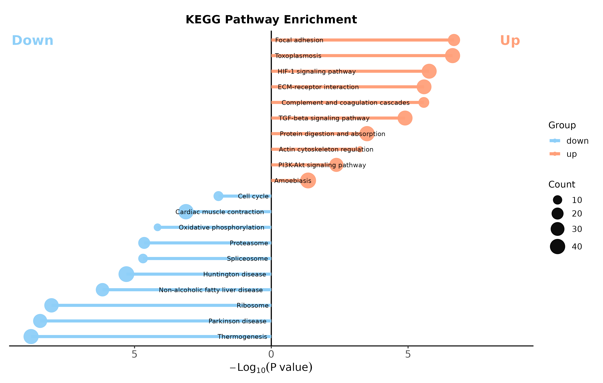

plot16 · 代码 2 · 图 4 · 笔记 1 · 代码库专题
富集棒棒糖图
代码库整理的专题，README 见原始目录。

kegg bidirectional lollipopkegg_bidirectional_lollipop.png
共 2 张：点缩略图切换主图，下载按钮跟随当前主图。

图源：kegg_bidirectional_lollipop.png
分析代码
2 个源码文件，按目录顺序；本机绝对路径已替换为 ~。 代码可复制，但需要按自己的数据改路径与参数。
01_enrichment_lollipop_bidirectional.r
# ============================================================
# enrichment_lollipop_bidirectional.R
# 通用双向富集棒棒糖图: 杆长=富集比, 点色=-log10(FDR), 标签贴近0轴
# 输入: 可选 CSV; 默认使用内置双组模拟数据
# 输出: PDF 矢量图 + PNG 预览
# 依赖: ggplot2, dplyr, tibble, patchwork
# ============================================================
suppressPackageStartupMessages({
library(ggplot2)
library(dplyr)
library(tibble)
library(patchwork)
})
# ---- 1. 用户设置 ----
# 设为 NA 使用内置模拟数据;使用自有数据时填写 CSV 路径。
input_csv <- NA_character_
output_pdf <- "simulated_enrichment.pdf"
output_png <- "simulated_enrichment.png"
# CSV 必需列: celltype, enrichment_ratio, FDR。
# 可选 group 列:有 1 个组时画单图,有 2 个组时横向拼接。
celltype_col <- "celltype"
ratio_col <- "enrichment_ratio"
fdr_col <- "FDR"
group_col <- "group"
# 每组显著性渐变终点色。颜色必须为单行 #RRGGBB。
group_high_colors <- c("Group 1" = "#4B0082", "Group 2" = "#9ACD32")
low_color <- "#F2F2F2"
point_size <- 3.8
x_limits <- c(-2.25, 2.25)
x_breaks <- c(-2, -1, 0, 1, 2)
pdf_width_in <- 10
pdf_height_in <- 4.5
png_dpi <- 300
# ---- 2. 工具函数 ----
validate_color <- function(x, label) {
if (length(x) != 1L || is.na(x) || !grepl("^#[0-9A-Fa-f]{6}$", x)) {
stop(label, " 必须是单行 #RRGGBB 颜色, 当前值: ", dQuote(x))
}
}
validate_color(low_color, "low_color")
invisible(mapply(validate_color, unname(group_high_colors), names(group_high_colors)))
prepare_data <- function(data, group_name) {
required <- c(celltype_col, ratio_col, fdr_col)
missing_cols <- setdiff(required, names(data))
if (length(missing_cols) > 0) {
stop("输入数据缺少列: ", paste(missing_cols, collapse = ", "))
}
ratio <- suppressWarnings(as.numeric(data[[ratio_col]]))
fdr <- suppressWarnings(as.numeric(data[[fdr_col]]))
labels <- as.character(data[[celltype_col]])
if (anyNA(ratio) || any(!is.finite(ratio))) stop(ratio_col, " 必须全部为有限数值。")
if (anyNA(fdr) || any(!is.finite(fdr)) || any(fdr <= 0 | fdr > 1)) {
stop(fdr_col, " 必须满足 0 < FDR <= 1。")
}
if (anyNA(labels) || any(trimws(labels) == "")) stop(celltype_col, " 不能含空值。")
if (anyDuplicated(labels)) stop(group_name, " 中的 ", celltype_col, " 不能重复。")
tibble(
celltype = factor(labels, levels = rev(labels)),
enrichment_ratio = ratio,
FDR = fdr,
neg_log10_FDR = -log10(fdr),
label_x = ifelse(ratio > 0, -0.05, 0.05),
label_hjust = ifelse(ratio > 0, 1, 0),
group = group_name
)
}
plot_enrichment <- function(data, high_col, title = NULL) {
validate_color(high_col, paste0(title %||% "high_col", " high_col"))
color_max <- max(data$neg_log10_FDR)
if (color_max == 0) color_max <- 1
ggplot(data, aes(y = celltype)) +
geom_segment(
aes(x = 0, xend = enrichment_ratio, yend = celltype),
linewidth = 0.6, color = "black"
) +
geom_point(
aes(x = enrichment_ratio, color = neg_log10_FDR),
size = point_size
) +
geom_vline(xintercept = 0, linewidth = 0.72, color = "black") +
geom_text(
aes(x = label_x, label = celltype, hjust = label_hjust),
size = 3.05, lineheight = 0.9
) +
scale_color_gradient(
low = low_color, high = high_col,
limits = c(0, color_max),
name = expression(-log[10](FDR))
) +
scale_x_continuous(limits = x_limits, breaks = x_breaks) +
labs(title = title, x = "Enrichment ratio", y = NULL) +
theme_classic(base_size = 12) +
theme(
plot.title = element_text(size = 12, face = "bold", hjust = 0.5),
axis.text.y = element_blank(), axis.ticks.y = element_blank(), axis.line.y = element_blank(),
axis.title.x = element_text(size = 11),
legend.title = element_text(size = 9.5), legend.text = element_text(size = 8.5),
plot.margin = margin(5, 10, 5, 10)
)
}
`%||%` <- function(x, y) if (is.null(x)) y else x
# ---- 3. 读取或生成数据 ----
if (!is.na(input_csv)) {
if (!file.exists(input_csv)) stop("input_csv 不存在: ", input_csv)
raw_data <- read.csv(input_csv, stringsAsFactors = FALSE, check.names = FALSE)
if (group_col %in% names(raw_data)) {
groups <- unique(as.character(raw_data[[group_col]]))
if (anyNA(groups) || any(trimws(groups) == "")) stop(group_col, " 不能含空值。")
if (length(groups) > 2) stop("当前模板最多支持 2 个 group, 检测到: ", length(groups))
data_list <- lapply(groups, function(g) {
prepare_data(raw_data[as.character(raw_data[[group_col]]) == g, , drop = FALSE], g)
})
names(data_list) <- groups
} else {
data_list <- list("Enrichment" = prepare_data(raw_data, "Enrichment"))
}
} else {
set.seed(123)
celltypes <- c(
"Fibroblast", "Myofibroblast", "Inflammatory fibroblast",
"ECM-remodeling fibroblast", "Proliferating fibroblast",
"Endothelial cell", "Pericyte", "Smooth muscle cell", "Macrophage",
"Monocyte", "Dendritic cell", "T cell", "NK cell", "Keratinocyte", "Mast cell"
)
ratios <- c(1.90, 1.80, 1.72, 1.65, 1.58, 1.52, 1.45, 1.32, 1.25,
-1.25, -1.35, -1.55, -1.82, -1.88, -1.95)
sim1 <- tibble(celltype = celltypes, enrichment_ratio = ratios,
FDR = 10^(-runif(length(celltypes), 1, 10)))
sim2 <- sim1 %>% mutate(
enrichment_ratio = enrichment_ratio + rnorm(n(), 0, 0.08),
FDR = 10^(-runif(n(), 1, 10))
)
data_list <- list(
"Group 1" = prepare_data(sim1, "Group 1"),
"Group 2" = prepare_data(sim2, "Group 2")
)
}
# ---- 4. 绘图与输出 ----
plots <- lapply(seq_along(data_list), function(i) {
group_name <- names(data_list)[i]
high_col <- if (group_name %in% names(group_high_colors)) {
unname(group_high_colors[group_name])
} else {
unname(group_high_colors[pmin(i, length(group_high_colors))])
}
plot_enrichment(data_list[[i]], high_col = high_col, title = group_name)
})
p <- if (length(plots) == 1) plots[[1]] else wrap_plots(plots, ncol = length(plots))
ggsave(output_pdf, p, width = pdf_width_in, height = pdf_height_in,
units = "in", device = cairo_pdf, bg = "white")
ggsave(output_png, p, width = pdf_width_in, height = pdf_height_in,
units = "in", dpi = png_dpi, bg = "white")
cat("组数: ", length(data_list), "\n")
cat("PDF 输出: ", output_pdf, "\n")
cat("PNG 输出: ", output_png, "\n")
03_kegg_bidirectional_lollipop.r
# ============================================================
# 03_kegg_bidirectional_lollipop.R
# KEGG 双向棒棒糖图: 上下调通路一图尽收（寅生信教程风格）
# - 上调通路向右、下调通路向左, 杆长 = -log10(P)
# - 点大小 = 基因数 Count, 颜色 = 上下调分组
# - 通路名贴 0 轴两侧: geom_text 精确落位, 与杆逐行对齐（不用 repel,
# repel 的避让会把标签推离自己的行, 造成行距不均）
# - 重复通路坑: 同一通路同时在上下调富集时, Description 有重复,
# 直接 factor() 会报错/乱序 → 用 "通路 (Cluster)" 唯一 ID 排序,
# 显示仍用原始通路名
# 输入: 可选 CSV（compareCluster 结果或整理好的富集表）; 默认内置模拟数据
# 输出: PDF（矢量）+ PNG 预览
# 依赖: ggplot2, dplyr, tibble, scales
# ============================================================
suppressPackageStartupMessages({
library(ggplot2)
library(dplyr)
library(tibble)
library(scales)
})
# ---- 1. 用户设置 ----
# 设为 NA 使用内置模拟数据; 使用自有数据时填写 CSV 路径。
# CSV 必需列: Description, Cluster(up/down), pvalue, p.adjust, Count
# （即 clusterProfiler::compareCluster + setReadable 输出的
# @compareClusterResult 经 res[pvalue<0.05,] 筛选后的表格）
input_csv <- NA_character_
output_pdf <- "kegg_bidirectional_lollipop.pdf"
output_png <- "kegg_bidirectional_lollipop.png"
top_n <- 10 # 每组取 p.adjust 最小的前 N 条通路
up_color <- "#FFA07A" # 上调（浅鲑橙, 教程同款）
down_color <- "#8ECFF8" # 下调（浅天蓝, 教程同款）
label_size <- 3.0 # 通路名字号
title <- "KEGG Pathway Enrichment"
pdf_width_in <- 11
pdf_height_in<- 7
png_dpi <- 300
# ---- 2. 工具函数 ----
validate_color <- function(x, label) {
if (length(x) != 1L || is.na(x) || !grepl("^#[0-9A-Fa-f]{6}$", x)) {
stop(label, " 必须是单行 #RRGGBB 颜色, 当前值: ", dQuote(x))
}
}
validate_color(up_color, "up_color")
validate_color(down_color, "down_color")
# 统一输入 → 标准五列: Description / Cluster / pvalue / p.adjust / Count
prepare_data <- function(data) {
required <- c("Description", "Cluster", "pvalue", "p.adjust", "Count")
missing_cols <- setdiff(required, names(data))
if (length(missing_cols) > 0) {
stop("输入数据缺少列: ", paste(missing_cols, collapse = ", "),
"\n 可直接传 compareCluster 结果: ",
"kk@compareClusterResult %>% filter(pvalue < 0.05)")
}
out <- tibble(
Description = as.character(data$Description),
Cluster = as.character(data$Cluster),
pvalue = suppressWarnings(as.numeric(data$pvalue)),
p.adjust = suppressWarnings(as.numeric(data$p.adjust)),
Count = suppressWarnings(as.integer(data$Count))
)
if (anyNA(out$pvalue) || any(out$pvalue <= 0)) stop("pvalue 必须为正数值。")
if (anyNA(out$Count)) stop("Count 必须为整数。")
bad_cluster <- setdiff(unique(out$Cluster), c("up", "down"))
if (length(bad_cluster) > 0) {
stop("Cluster 列只支持 up/down, 发现异常值: ",
paste(bad_cluster, collapse = ", "),
"\n 若你的分组名不同, 请先重编码, 如 dplyr::mutate(Cluster = dplyr::recode(Cluster, \"UP\" = \"up\"))")
}
if (length(unique(out$Cluster)) < 2) {
stop("需要同时存在 up 与 down 两组才能画双向图。")
}
out
}
# 每组取 top_n, 生成唯一 ID 排序列（教程核心坑位处理）
top_and_order <- function(data, n = top_n) {
data %>%
mutate(pvalue2 = -log10(pvalue) * ifelse(Cluster == "up", 1, -1)) %>%
group_by(Cluster) %>%
arrange(p.adjust, .by_group = TRUE) %>%
slice_head(n = n) %>%
ungroup() %>%
mutate(
Description_unique = paste0(Description, " (", Cluster, ")") # 唯一 ID
) %>%
arrange(pvalue2) %>% # 从小到大
mutate(
Description_unique = factor(Description_unique,
levels = Description_unique)
)
}
# ---- 3. 读取或生成数据 ----
if (!is.na(input_csv)) {
if (!file.exists(input_csv)) stop("input_csv 不存在: ", input_csv)
raw <- read.csv(input_csv, stringsAsFactors = FALSE, check.names = FALSE)
kegg_top <- top_and_order(prepare_data(raw))
} else {
# 内置模拟数据: 仿 compareCluster(up/down) 富集结果的形态
set.seed(2026)
up_paths <- c(
"Focal adhesion", "ECM-receptor interaction", "PI3K-Akt signaling pathway",
"Protein digestion and absorption", "Complement and coagulation cascades",
"Wnt signaling pathway", "TGF-beta signaling pathway",
"Cell adhesion molecules", "Actin cytoskeleton regulation",
"HIF-1 signaling pathway", "Amoebiasis", "Toxoplasmosis"
)
down_paths <- c(
"Oxidative phosphorylation", "Ribosome", "Proteasome",
"Spliceosome", "Cell cycle", "DNA replication",
"Parkinson disease", "Alzheimer disease", "Huntington disease",
"Cardiac muscle contraction", "Thermogenesis", "Non-alcoholic fatty liver disease"
)
mk <- function(paths, cluster) {
k <- length(paths)
tibble(
Description = paths,
Cluster = cluster,
pvalue = 10^(-runif(k, 1.3, 9)), # 0.05 ~ 1e-9
p.adjust = 10^(-runif(k, 0.9, 7)),
Count = sample(4:48, k, replace = TRUE)
)
}
kegg_top <- top_and_order(rbind(mk(up_paths, "up"), mk(down_paths, "down")))
}
# ---- 4. 绘图 ----
up_n <- sum(kegg_top$pvalue2 > 0)
down_n <- sum(kegg_top$pvalue2 < 0)
# Up/Down 角标位置随数据自适应（教程硬编码 x=15,y=40 会因通路数变化错位）
n_levels <- nrow(kegg_top)
y_span <- max(abs(kegg_top$pvalue2))
y_max <- y_span * 1.08
badge_x_up <- n_levels # 顶端行, 右上角（上调杆不遮挡）
badge_x_down <- n_levels # 顶端行, 左上角（负半轴侧恒为空白区, 避开下行长杆）
p <- ggplot(kegg_top, aes(x = Description_unique, y = pvalue2)) +
coord_flip() +
geom_hline(yintercept = 0, linewidth = 0.7, color = "black") +
geom_segment(aes(xend = Description_unique, yend = 0,
color = Cluster), linewidth = 1.9) +
geom_point(aes(size = Count, color = Cluster), alpha = 0.95) +
scale_color_manual(values = c("up" = up_color, "down" = down_color),
name = "Group") +
scale_size_continuous(range = c(3, 9), name = "Count") +
scale_y_continuous(
expand = expansion(add = c(0.1, 0.1)),
limits = c(-y_max, y_max),
breaks = seq(-floor(y_span / 5) * 5, floor(y_span / 5) * 5, by = 5),
labels = abs # 负半轴也显示绝对值, 教程同款
) +
labs(x = NULL, y = expression(-Log[10](P~value)), title = title) +
# 通路名贴 0 轴两侧: geom_text 精确落位 —— 每条通路独占一行, 标签
# vjust 居中锁在自己那行, 行距继承离散刻度的均匀间距, 与杆逐行对齐。
# (弃用 geom_text_repel: 其避让算法会把标签沿通路轴推开, 标签漂离
# 自己的行 → 行距忽大忽小; 本图上下调分居两侧、标签反向延伸, 不会互撞)
# hjust = -0.08 / 1.08: 文字起点与 0 轴留出与字宽成比例的小间隙, 不压轴线
geom_text(
data = filter(kegg_top, pvalue2 > 0),
aes(x = Description_unique, y = 0, label = Description),
hjust = -0.08, size = label_size, color = "black"
) +
geom_text(
data = filter(kegg_top, pvalue2 < 0),
aes(x = Description_unique, y = 0, label = Description),
hjust = 1.08, size = label_size, color = "black"
) +
# Up/Down 角标
annotate("text", x = badge_x_up, y = y_max * 0.92,
label = "Up", size = 6.2, fontface = "bold", color = up_color) +
annotate("text", x = badge_x_down, y = -y_max * 0.92,
label = "Down", size = 6.2, fontface = "bold", color = down_color) +
theme_bw(base_size = 13) +
theme(
axis.text.x.y = NULL, # 隐藏通路名刻度（已有贴轴标签）
axis.text.x = element_text(size = 13, hjust = 0.5),
axis.text.y = element_blank(),
axis.ticks.y = element_blank(),
axis.title.x = element_text(size = 14),
axis.line = element_line(linewidth = 0.6),
axis.line.y = element_blank(),
panel.grid.major = element_blank(),
panel.grid.minor = element_blank(),
panel.border = element_blank(),
plot.title = element_text(hjust = 0.5, size = 15, face = "bold"),
plot.margin = margin(20, 12, 10, 12),
legend.title = element_text(size = 12),
legend.text = element_text(size = 11),
legend.position = "right",
legend.background = element_rect(fill = "transparent")
)
# ---- 5. 输出（只输出 PDF, PNG 仅预览用）----
ggsave(output_pdf, p, width = pdf_width_in, height = pdf_height_in,
units = "in", device = cairo_pdf, bg = "white")
ggsave(output_png, p, width = pdf_width_in, height = pdf_height_in,
units = "in", dpi = png_dpi, bg = "white")
cat("上行通路数:", up_n, "| 下行通路数:", down_n, "\n")
cat("PDF 输出:", output_pdf, "\n")
cat("PNG 输出:", output_png, "\n")
用 MCP 直接出图
这个专题已经做成确定性工具，调用后直接返回图片， 不需要 AI 现写代码。